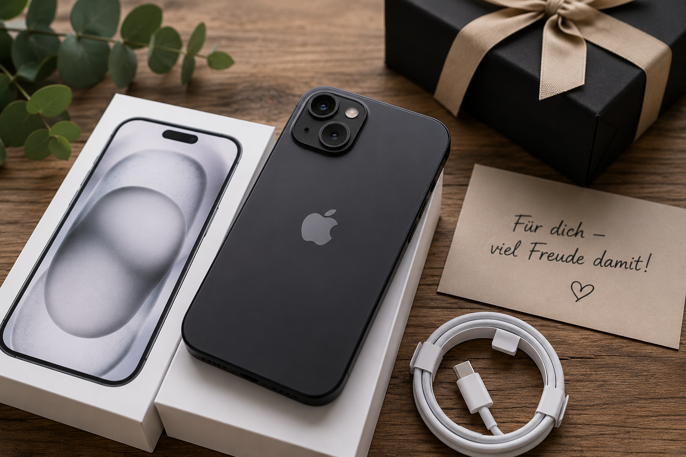

Technik-Geschenke
Weitere Technikideen.
ÖffnenEin hochwertiges Geschenk für Menschen, die bereits Apple-Geräte verwenden oder bewusst ins Apple-Ökosystem wechseln möchten.
Aktuellen Preis bei Amazon prüfen*
Das iPhone 15 mit 256 GB bietet viel Speicher und eine lange Nutzungsdauer. Es ist aber ein teures Geschenk und sollte nur gewählt werden, wenn Betriebssystem, Größe und Speicherbedarf wirklich passen.
| Speicher | 256 GB |
|---|---|
| Farbe | Schwarz |
| Anschluss | USB-C |
| Zielgruppe | Apple-Nutzer und Umsteiger |
Für Menschen, die ein langlebiges Smartphone suchen und mit iOS zufrieden sind.
Für viele Fotos, Videos und Apps bieten 256 GB deutlich mehr Reserve als 128 GB.